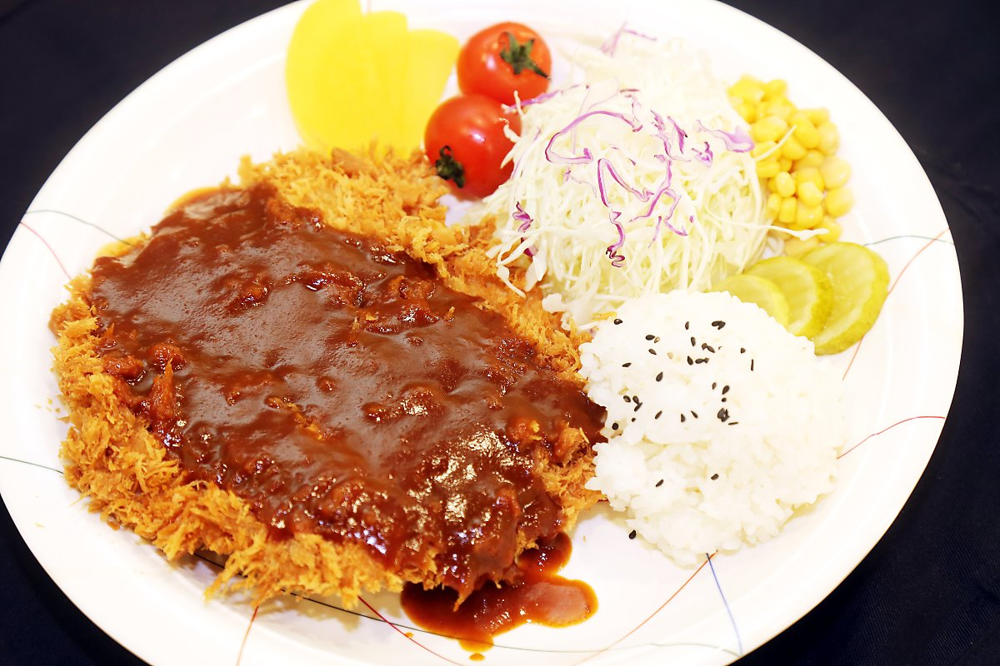

커틀릿(Cutlet)
커틀릿은 얇게 저민 고기를 굽거나 기름에 튀긴 것을 말합니다. 본래 서양음식이지만, 여러가지 역사적 사건을 통해 일본으로, 또 일본에서 국내로 들어오게 되었습니다.
들어오면서 각국에 맞는 요리법이 개발되고, 그에 따라 이름도 바뀌었습니다. 주로 서양에서는 커틀릿, 일본에서는 가츠, 국내에서는 가스로 부릅니다. 일본식과 국내식의 차이는 거의 없는편입니다.
원판인 고기가 본래 맛있는 음식인 만큼, 요리법도 굉장히 다양하게 나타납니다. 고기의 종류에 따라 돈가스, 새우가스, 비프가스, 민치가스, 콩가스 등으로 분류되며, 추가로 첨가되는 음식에 따라 치즈 돈가스, 고구마 돈가스, 카레 돈가스 등으로도 분류됩니다.